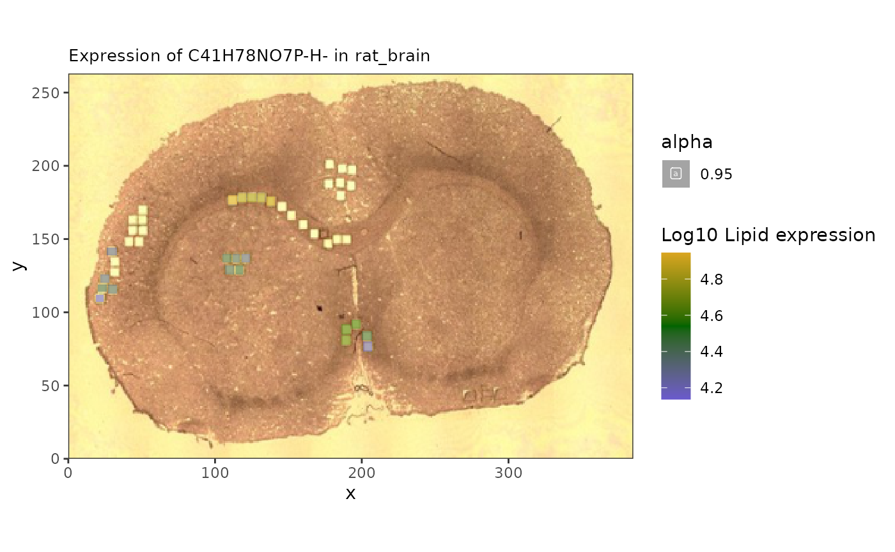

spammR lipidomic and proteomic integration
Sara Gosline
Sep 03, 2026
Source:vignettes/lipidProt.Rmd
lipidProt.RmdAbout
The goal of this vignette is to showcase integration between two different omes in the same spatial context. For this we use a dataset from sections of rat brain measured via mass spetrometry imaging (MSI) to identify lipidomic measurements alongside proteomics from regions of interest from Vandergrift et al.
We show how spammR enables: - download and loading of
datasets - visualization of features within each dataset -
identification of correlated regions in this dataset
First we load the required packages.
Load proteomics data
The proteomics data can be found on zenodo and downloaded directly. From there.
Format data
We require formatting the data as a matrix for loading.
path <- tempfile()
bfc <- BiocFileCache(path, ask = FALSE)Now we download the data we need.
#brain data
finame <- paste0('https://zenodo.org/records/13345212/files/DESI+spatial',
'%20proteomics%20rat%20brain%20proteomics%20',
'result.xlsx?download=1')
pdat <- bfcadd(bfc, "proteomics", fpath=finame)
#read in data, convert to matrix
dat <- readxl::read_xlsx(pdat)#'dat.xlsx')
feature_data <- select(dat, c(Protein,`Protein ID`,`Entry Name`,Gene)) |>
dplyr::distinct() |>
tibble::column_to_rownames('Protein')
dat <- select(dat, c(Protein, starts_with('ROI'))) |>
tibble::column_to_rownames('Protein')The image itself we downloaded separately from metaspace (see below) and stored it in the package.
##read in image
img <- system.file("extdata","brain_img_0.png",package = 'spammR')Now that the image is loaded we can visualize it (not done here to save space) to verify it is what we expect.
cowplot::ggdraw() + cowplot::draw_image(system.file("extdata",
"brain_img_0.png",
package = "spammR"))
#ggsave('brain_image.pdf')As you can see, there are squares chopped out of the image. These were the samples that were measured via proteomics. The next step is to map these coordinates so we can compare them with the MSI data.
Loading image coordinates rom GEOJson
We used the program [QuPath][(https://qupath.readthedocs.io/en/stable/) to collect the regions of interest (ROI) coordinates on the image. This program allowed us to highlight the regions of interest and export them in GEOJson format, which can then be used as input into spammR.
We store the GEOJson file in the package for you to load with this
example should you choose to load teo GEOJson using the
geojsonR package.
#remove this once we can include it in spammR
library(geojsonR)
jsondat <- FROM_GeoJson(system.file('extdata','brain_roi.geojson',
package = 'spammR'))
##herr er hry yhr
coords <- do.call(rbind, lapply(jsondat$features,function(x){
roi <- x$properties$name
xv <- x$geometry$coordinates[,1]
yv <- x$geometry$coordinates[,2]
if (is.null(roi))
roi = ""
return(list(ID = roi, x_pixels = min(xv), y_pixels = min(yv),
spot_height = max(yv) - min(yv),
spot_width = max(xv) - min(xv)))
})) |>
as.data.frame() |>
subset(ID != "") |>
tidyr::separate(ID,into = c('ROI','Replicate'),
sep = '_',
remove = FALSE) |>
tibble::remove_rownames() |>
tibble::column_to_rownames('ID')
##now for each ROI we want an x, y, cell height and cell_width
#y-coordinates are from top, so need to udpate
coords$y_pixels = 263 - unlist(coords$y_pixels) - unlist(coords$spot_height)
coords$x_pixels = unlist(coords$x_pixels)
coords$spot_height = unlist(coords$spot_height)
coords$spot_width = unlist(coords$spot_width)
write.csv(as.data.frame(coords),file='../inst/extdata/bcoords.csv')To avoid this we just load the csv directly:
coords <- read.csv(system.file('extdata','bcoords.csv',
package = 'spammR'))
rownames(coords) <- paste(coords$ROI, coords$Replicate,sep = '_')Now that we have the coordinates we can use spammR to create the
SpatialExperiment object and plot a protein.
Create SpatialExperiment Object
Here we load the proteomics and create the object.
#create an SFE
spe <- spammR::convert_to_spe(dat = dat,
feature_meta = feature_data,
sample_meta = coords,
spatial_coords_colnames = c('x_pixels','y_pixels'),
assay_name = 'proteomics',
sample_id = 'rat_brain',
image_files = img,
image_id = 'rat_brain')
# myelin
spammR::spatial_heatmap(spe, feature = 'P02688',
feature_type = 'Protein ID',
sample_id = 'rat_brain',
image_id = 'rat_brain')
The protein data was collected from smaller regions of interest within the larger image.
Load lipidomics data
Now that we have the image and protein data loaded, we can begin to ingest the lipid data from metaspace. This requires an additional command to pull the information directly.
Retrieve metaspace data
We created a wrapper to the Metaspace python package to enable download and formatting of metaspace measurements for spammR.
The result is a SpatialExperiment. This takes too long
to run as a vignette so we show the code and then load the file
separately.
##get lipid data from metaspace
mspe <- spammR::retrieve_metaspace_data("2024-02-15_20h37m13s",
fdr = 0.2,
assay_name = 'lipids',
sample_id = 'rat_brain',
rotate = TRUE,
drop_zeroes = TRUE)Now we can downlod the object from figshare and load it.
mspe.url <- 'https://api.figshare.com/v2/file/download/60993349'
mcache <- bfcadd(bfc, "mspe", fpath = mspe.url)## Error while performing HEAD request.
## Proceeding without cache information.
mspe <- readRDS(mcache)Add image data
Lastly we add the image file to the data downloaded by metaspace and visualize a lipid of interest.
## add in image to check
mspe <- SpatialExperiment::addImg(mspe, img, scaleFactor = NA_real_,
sample_id = 'rat_brain',
image_id = 'rat_brain')
meta <- rowData(mspe)
meta$Name <- vapply(meta$moleculeNames, function(x) {
x[1]}, character(1))
rowData(mspe) <- meta
spatial_heatmap(mspe, feature = 'C41H78NO7P-H-',
assay = 'lipids',
plot_log = TRUE,
metric_display = 'Lipid expression',
sample_id = 'rat_brain',
image_id = 'rat_brain')#plot with an ion## Warning: Removed 17673 rows containing missing values or values outside the scale range
## (`geom_label()`).
#ggsave('lipidExpr.pdf')Here we can see the overlay of specific lipids.
Comparing Protein and Lipids
Now we can compare lipids in proteins in the same image.
Merging images to single coordinate system
Since the proteomics is measured in discrete ROI and the lipids are measured on a per-pixel basis, to carry out pure multiomic comparisons we need to map them to the same coordinate space.
To do this we use the spat_reduce function to reduce the
lipidomics data to the same regions as the proteomics. Here is an
example of the same ion we saw before.

Now we can start to analyze the relationship between lipids and proteins.
Correlation analysis
One of the innovative analyses we can do with the spatial data is to
evaluate correlations within molecules across space. We include the
spatial_network function that can compute correlations
between groups of features across omic domains and show how to use it
below.
Looking for lipids associated with known proteins
The genes and proteins of the brain have been well studied, and proteins such as glial marker Gfqp are known to play a significant role in the central nervous system and can be used as markers for disease. We can now search for lipids that are correlated with myelin spatially using our network tool.
#let's look at the correlation between the protein and the lipids
mbp_cor <- spatial_network(reduced,
assay_names = c("proteomics","lipids"),
query_feature = 'P47819', #protein
target_features = rowData(altExp(reduced))[,'Name'],#lipids
feature_names = c('Protein ID','Name'))
mbp_cor |>
activate(edges) |>
arrange(desc(abs(corval)))## # A tbl_graph: 22 nodes and 21 edges
## #
## # A rooted tree
## #
## # Edge Data: 21 × 3 (active)
## from to corval
## <int> <int> <dbl>
## 1 4 22 -0.728
## 2 14 22 -0.695
## 3 3 22 -0.691
## 4 18 22 -0.688
## 5 6 22 -0.68
## 6 19 22 -0.679
## 7 15 22 -0.565
## 8 2 22 0.468
## 9 10 22 -0.468
## 10 1 22 0.456
## # ℹ 11 more rows
## #
## # Node Data: 22 × 2
## name class
## <chr> <chr>
## 1 PS(28:6(10Z,13Z,16Z,19Z,22Z,25Z)/12:0) lipids
## 2 PI(18:1(11Z)/20:3(8Z,11Z,14Z)) lipids
## 3 Arachidonate lipids
## # ℹ 19 more rows
mbp_cor |>
ggraph(layout = 'stress') +
geom_edge_link(aes(colour = corval)) +
geom_node_point(aes(color = class)) +
geom_node_label(aes(label = name, color = class)) +
scale_color_manual(values=c(lipids = 'darkorange',proteomics = 'slateblue3'))
#ggsave('gfap_cor_graph.pdf')
nodes <- mbp_cor |> activate(nodes) |> as_tibble()
nodes[c(4,2),]## # A tibble: 2 × 2
## name class
## <chr> <chr>
## 1 22:6(4Z,7Z,10Z,13Z,16Z,19Z) lipids
## 2 PI(18:1(11Z)/20:3(8Z,11Z,14Z)) lipidsNow we can now double check the lipid measurements of these values. As a refresher here is myelin.
spatial_heatmap(reduced,
feature = 'P47819',
assay_name = 'proteomics',
feature_type = 'Protein ID',
metric_display = 'Protein expression',
plot_title = 'Gfap expression',
sample_id = 'rat_brain', image_id = 'rat_brain')## Warning: Removed 25 rows containing missing values or values outside the scale range
## (`geom_label()`).
#ggsave('gfap_brain.pdf')And here we can see how the correlated lipids are expressed throughout.
## anti-correlated
a1 <- spatial_heatmap(reduced,
feature = '22:6(4Z,7Z,10Z,13Z,16Z,19Z)',
assay_name = 'lipids',
feature_type = 'Name',
metric_display = 'Lipid expression',
sample_id = 'rat_brain', image_id = 'rat_brain')
a2 <- spatial_heatmap(mspe,
feature = '22:6(4Z,7Z,10Z,13Z,16Z,19Z)',
assay_name = 'lipids',
feature_type = 'Name',
metric_display = 'Lipid expression',
sample_id = 'rat_brain', image_id = 'rat_brain')
cowplot::plot_grid(a1, a2, ncol=2)## Warning: Removed 25 rows containing missing values or values outside the scale range
## (`geom_label()`).## Warning: Removed 61192 rows containing missing values or values outside the scale range
## (`geom_label()`).
#ggsave('antiCorrelatedLipids.pdf', width = 10)
#correlated
c1 <- spatial_heatmap(reduced,
feature = 'PI(18:1(11Z)/20:3(8Z,11Z,14Z))',
assay_name = 'lipids',
feature_type = 'Name',
metric_display = 'Lipid expression',
sample_id = 'rat_brain', image_id = 'rat_brain')
c2 <- spatial_heatmap(mspe,
feature = 'PI(18:1(11Z)/20:3(8Z,11Z,14Z))',
assay_name = 'lipids',
feature_type = 'Name',
metric_display = 'Lipid expression',
sample_id = 'rat_brain', image_id = 'rat_brain')
cowplot::plot_grid(c1, c2, ncol = 2)## Warning: Removed 25 rows containing missing values or values outside the scale range
## (`geom_label()`).## Warning: Removed 68010 rows containing missing values or values outside the scale range
## (`geom_label()`).
#ggsave('correlatedLipids.pdf', width = 10)This approach, if used on larger samples, can be used to identify lipid biomarkers based on known protein function.
Ascribing function to unknown lipids
We can also use the correlation analysis to assess the biological function of specific lipids, by seeking out which pathways are over-represented among proteins who are correlated with a lipid of interest.
First we look to see which of our lipids are most variable across the tissue.
lvs <- sort(apply(assay(mspe,'lipids'),1,var,na.rm = TRUE),decreasing = TRUE)[1:10]
lvn <- rowData(altExp(reduced))[names(lvs),'Name']
lvn[1:5]## [1] "PS(28:6(10Z,13Z,16Z,19Z,22Z,25Z)/12:0)"
## [2] "Arachidonate"
## [3] "PI(18:1(11Z)/20:3(8Z,11Z,14Z))"
## [4] "PI(14:0/20:1(11Z))"
## [5] "22:6(4Z,7Z,10Z,13Z,16Z,19Z)"We’ll focus on phosphatidylserine “PS(28:6(10Z,13Z,16Z,19Z,22Z,25Z)/12:0)”, which is the most variable across the sample.
#number 1 seems to have an interesting pattern
spatial_heatmap(mspe,feature = lvn[1], assay_name = 'lipids',
feature_type = 'Name',
image_id = 'rat_brain', sample_id = 'rat_brain',
metric_display = 'Lipid expression',
plot_log = TRUE)## Warning: Removed 68794 rows containing missing values or values outside the scale range
## (`geom_label()`).
spatial_heatmap(reduced,feature = lvn[1], assay_name = 'lipids',
feature_type = 'Name',
image_id = 'rat_brain', sample_id = 'rat_brain',
metric_display = 'Lipid expression',
plot_log = TRUE)## Warning: Removed 25 rows containing missing values or values outside the scale range
## (`geom_label()`).
Now we can ask what proteins correlate with this lipid in the reduced object.
#let's look at the correlation between the lipid and proteins
fl <- c(lvn[1], rowData(reduced)[,'Gene'])
cg <- spatial_network(reduced,
assay_names = c("proteomics","lipids"),
query_feature = lvn[1], #lipid
target_features = rowData(reduced)[,'Gene'],
feature_names = c('Gene','Name'))## Joining with `by = join_by(rowval)`
##we can then use trick above to get the neighborhood of our lipid
gt <- cg %>%
activate(nodes) |>
as_tibble()
neigh_weights <- cg |>
activate(edges) |>
#now sure how to or from is assigned, might want
#to check both
filter(to == which(gt$name == lvn[1]))
#then we can get the edge weights and nodes
edges <- neigh_weights |> as_tibble()
nodes <- neigh_weights |>
activate(nodes) |>
as_tibble()
##create a table with the protein correlationm
#sep2026: proteins used to be in $to column now in $from
prot_cor <- data.frame(nodes[edges$from,],lipid_cor = edges$corval) |>
dplyr::rename(Gene = 'name') |>
subset(Gene %in% rowData(reduced)[,'Gene'])
neigh_weights |>
activate(edges) |> filter(abs(corval) > 0.75) |>
activate(nodes) |>
mutate(degree = centrality_degree(mode = 'all')) |>
filter(degree > 0) |>
ggraph(layout = 'stress') +
geom_edge_link(aes(colour = corval)) +
geom_node_point(aes(color = class)) +
geom_node_label(aes(label = name, color = class))
Now we have the correlation value - both negative and positive - that we can use as input to a functional enrichment test.
We can look at the pathway enriched by these correlation values using
leapR via the enrichment_in_order method.
##add back to data set
prot_cor <- prot_cor |>
group_by(Gene) |>
summarize(lipid_cor = mean(lipid_cor))
rowData(reduced) <- rowData(reduced) |>
as.data.frame() |>
left_join(as.data.frame(prot_cor)) |>
mutate(upperGene = toupper(Gene))## Joining with `by = join_by(Gene)`
data("krbpaths")
enrich <- leapR::leapR(geneset = krbpaths, enrichment_method = 'enrichment_in_order',
eset = reduced, primary_column = 'lipid_cor', method = 'ks',
id_column = 'upperGene', minsize = 5)
paths <- subset(enrich, BH_pvalue < 0.3)
#subset(enrich,ingroup_mean > 0.25) |>
# subset(pvalue <0.05)
DT::datatable(paths,options = list(scrollX = TRUE))We can now look at pathways that are the most statistically significant.
Plot proteins
We first check the expression of the proteins as well and see if they are all correlated in the same direction.
prots <- unlist(stringr::str_split(paths[1,'ingroupnames'], pattern = ', '))
pv <- assay(subset(reduced,upperGene %in% prots),'proteomics')
lv <- assay(subset(altExp(reduced),Name == lvn[1]),'lipids')
##proteins seem anti-correlated
mean(cor(t(pv),t(lv), method = 'spearman'))## [1] -0.2047532We can see that they are negative correlated.
p2 <- spatial_heatmap(reduced, assay_name = 'proteomics',
feature = prots,
feature_type = 'upperGene',
sample_id = 'rat_brain',
image_id = 'rat_brain',
plot_log = TRUE,
title_size = 10,
plot_title = rownames(paths)[1],
metric_display = 'Protein expression')
p2## Warning: Removed 25 rows containing missing values or values outside the scale range
## (`geom_label()`).
The heatmap confirms that the lipid of interest is indeed associated with this glucose and suger transporter pathway.
Summary
This vignette explores how one can use the spammR package to analyze multiomics measurements captured in a spatial context.
Session info
## R version 4.6.1 (2026-06-24)
## Platform: x86_64-pc-linux-gnu
## Running under: Ubuntu 24.04.4 LTS
##
## Matrix products: default
## BLAS: /usr/lib/x86_64-linux-gnu/openblas-pthread/libblas.so.3
## LAPACK: /usr/lib/x86_64-linux-gnu/openblas-pthread/libopenblasp-r0.3.26.so; LAPACK version 3.12.0
##
## locale:
## [1] LC_CTYPE=C.UTF-8 LC_NUMERIC=C LC_TIME=C.UTF-8
## [4] LC_COLLATE=C.UTF-8 LC_MONETARY=C.UTF-8 LC_MESSAGES=C.UTF-8
## [7] LC_PAPER=C.UTF-8 LC_NAME=C LC_ADDRESS=C
## [10] LC_TELEPHONE=C LC_MEASUREMENT=C.UTF-8 LC_IDENTIFICATION=C
##
## time zone: UTC
## tzcode source: system (glibc)
##
## attached base packages:
## [1] stats4 stats graphics grDevices utils datasets methods
## [8] base
##
## other attached packages:
## [1] leapR_1.0.0 BiocFileCache_3.2.0
## [3] dbplyr_2.6.0 ggraph_2.2.2
## [5] cowplot_1.2.0 readxl_1.5.0
## [7] tidygraph_1.3.1 lubridate_1.9.5
## [9] forcats_1.0.1 stringr_1.6.0
## [11] dplyr_1.2.1 purrr_1.2.2
## [13] readr_2.2.0 tidyr_1.3.2
## [15] tibble_3.3.1 ggplot2_4.0.3
## [17] tidyverse_2.0.0 spammR_0.99.25
## [19] limma_3.68.5 SpatialExperiment_1.22.0
## [21] SingleCellExperiment_1.34.0 SummarizedExperiment_1.42.0
## [23] Biobase_2.72.0 GenomicRanges_1.64.0
## [25] Seqinfo_1.2.0 IRanges_2.46.0
## [27] S4Vectors_0.50.2 BiocGenerics_0.58.1
## [29] generics_0.1.4 MatrixGenerics_1.24.0
## [31] matrixStats_1.5.0 BiocStyle_2.40.0
##
## loaded via a namespace (and not attached):
## [1] RColorBrewer_1.1-3 jsonlite_2.0.0 wk_0.9.5
## [4] magrittr_2.0.5 magick_2.9.1 farver_2.1.2
## [7] rmarkdown_2.32 fs_2.1.0 ragg_1.5.2
## [10] vctrs_0.7.3 spdep_1.4-2 memoise_2.0.1
## [13] rstatix_1.1.0 htmltools_0.5.9 S4Arrays_1.12.0
## [16] curl_8.0.0 broom_1.0.13 cellranger_1.1.0
## [19] s2_1.1.11 SparseArray_1.12.2 Formula_1.2-6
## [22] sass_0.4.10 spData_2.3.5 KernSmooth_2.23-26
## [25] bslib_0.12.0 htmlwidgets_1.6.4 desc_1.4.3
## [28] httr2_1.3.0 impute_1.86.0 plotly_4.12.1
## [31] cachem_1.1.0 igraph_2.3.3 lifecycle_1.0.5
## [34] pkgconfig_2.0.3 Matrix_1.7-5 R6_2.6.1
## [37] fastmap_1.2.0 digest_0.6.39 ggnewscale_0.5.2
## [40] crosstalk_1.2.2 textshaping_1.0.5 RSQLite_3.53.3
## [43] ggpubr_1.0.0 labeling_0.4.3 filelock_1.0.3
## [46] timechange_0.4.0 httr_1.4.9 polyclip_1.10-7
## [49] abind_1.4-8 compiler_4.6.1 proxy_0.4-29
## [52] bit64_4.8.6 withr_3.0.3 S7_0.2.2
## [55] backports_1.5.1 carData_3.0-6 viridis_0.6.5
## [58] DBI_1.3.0 ggforce_0.5.0 ggsignif_0.6.4
## [61] MASS_7.3-65 DelayedArray_0.38.2 rjson_0.2.23
## [64] classInt_0.4-11 tools_4.6.1 units_1.0-1
## [67] otel_0.2.0 glue_1.8.1 grid_4.6.1
## [70] sf_1.1-2 gtable_0.3.6 tzdb_0.5.0
## [73] class_7.3-23 data.table_1.18.6.1 hms_1.1.4
## [76] utf8_1.2.6 sp_2.2-3 car_3.1-5
## [79] XVector_0.52.0 ggrepel_0.9.8 pillar_1.11.1
## [82] tweenr_2.0.3 lattice_0.22-9 bit_4.6.0
## [85] deldir_2.0-4 tidyselect_1.2.1 knitr_1.51
## [88] gridExtra_2.3.1 bookdown_0.48 xfun_0.60
## [91] graphlayouts_1.2.5 statmod_1.5.2 DT_0.34.0
## [94] stringi_1.8.9 yaml_2.3.12 boot_1.3-32
## [97] evaluate_1.0.5 BiocManager_1.30.27 cli_3.6.6
## [100] reticulate_1.46.0 systemfonts_1.3.2 jquerylib_0.1.4
## [103] Rcpp_1.1.2 png_0.1-9 blob_1.3.0
## [106] pkgdown_2.2.1 viridisLite_0.4.3 scales_1.4.0
## [109] e1071_1.7-17 rlang_1.3.0